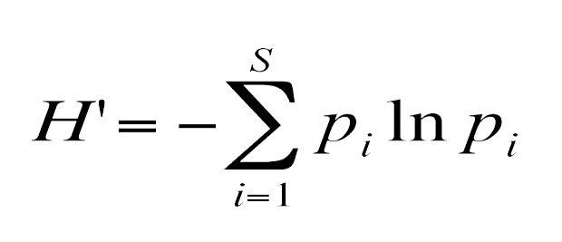
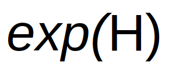

High-quality reference genomes are required for functional characterization and taxonomic assignment of the human gut microbiota.
Unified Human Gastrointestinal Genome (UHGG):
4,644 gut prokaryotes (>70% lack cultured representatives)
204,938 nonredundant genomes
Encode >170 million protein sequences, collated into Unified Human Gastrointestinal Protein (UHGP) catalog.
UHGP more than doubles the number of gut proteins in comparison to those present in the Integrated Gene Catalog.
40% of the UHGP lack functional annotations
Intraspecies genomic variation analyses revealed a large reservoir of accessory genes and single-nucleotide variants, many of which are specific to individual human populations.
The UHGG and UHGP collections enable studies linking genotypes to phenotypes in the human gut microbiome.
How likely it is to pick two members of the same species at random?
Inverse Simpson
Beware the variants:
Simpson (\(\lambda\))
reciprocal Simpson (\(1-\lambda\))
inverse Simpson (\(\frac{1}{\lambda}\))
Shannon diversity
Shannon Index:

True Richness:

True diversity, or the effective number of types, refers to the number of equally abundant types needed for the average proportional abundance of the types to equal what is observed in the dataset of interest.
The following object is masked from 'package:utils':
findMatches
The following objects are masked from 'package:base':
expand.grid, I, unname
Loading required package: IRanges
Loading required package: GenomeInfoDb
Loading required package: Biobase
Welcome to Bioconductor
Vignettes contain introductory material; view with
'browseVignettes()'. To cite Bioconductor, see
'citation("Biobase")', and for packages 'citation("pkgname")'.
Attaching package: 'Biobase'
The following object is masked from 'package:MatrixGenerics':
rowMedians
The following objects are masked from 'package:matrixStats':
anyMissing, rowMedians